Forward Deployed Systems & Generative AI Engineer · Shipping intelligent architectures that survive enterprise reality.
⚡ LAUNCH NEXUS-01 LAB ·
PORTFOLIO ↗ ·
LINKEDIN ↗ ·
EMAIL ↗
// PERSPECTIVE
Frontier generative models only generate durable enterprise value when grounded in deterministic architecture, resilient data pipelines, and audited failure boundaries. As a Forward Deployed Engineer, I specialize in bridging prototype intelligence with operational reality—engineering edge telemetry, high-throughput extraction pipelines, and citation-enforced generative AI that business teams rely upon daily.
// FLAGSHIP ARCHITECTURES
Four production-grade systems engineered for tangible operational challenges, verified by audited metrics and live deployments.
01 · FIREBLADE // MOBILE-TO-CLOUD TELEMETRY
Verified Production Outcome: 20 Employee Phones Deployed in Daily Enterprise Operations · Zero Event Loss
An edge-to-cloud telephony intelligence pipeline capturing high-frequency call telemetry across mobile fleets. Designed with an offline-first SQLite ring buffer to guarantee zero event loss during spotty field connectivity, streaming securely into a hardened FastAPI gateway and real-time operations dashboard.
System Architecture & Engineering Specification
| Layer | Implementation & Protocols |
|---|---|
| Mobile Edge Daemon | Kotlin background service running Android telephony state listeners, capturing call state transitions, audio metadata, and network quality indicators. |
| Resilient Edge Queue | Local SQLite ring buffer with exponential backoff retry policies, ensuring zero telemetry loss during connectivity drops. |
| Ingestion Gateway | FastAPI reverse-proxy endpoint enforcing TLS 1.3, HMAC request signatures, and per-device rate limiting. |
| Analytics Engine | Automated event normalization and Postgres aggregation, feeding executive duration histograms and sentiment metrics. |
Key Engineering Challenges Overcome:
- Circumventing Android Doze mode and manufacturer background execution limits without compromising device battery life.
- Handling out-of-order event delivery caused by asynchronous cellular reconnects through sequence monotonic timestamping.
02 · HYPERSPEED // EXTRACTION AUTOMATION
Verified Production Outcome: ~200,000 Supplier Emails Processed · ~70,000 Catalog SKUs Extracted
An automated document intelligence pipeline ingesting high-volume unstructured supplier communications, multi-page PDF catalogs, and non-standard invoice tables. Couples spatial OCR layout analysis with schema-guarded Gemini API extraction to construct a deduplicated, relational enterprise product catalog.
System Architecture & Engineering Specification
| Layer | Implementation & Protocols |
|---|---|
| Multi-Stream Intake | Automated Gmail API webhook poller and multi-threaded attachment ingestor handling MIME types, raw text, and nested PDFs. |
| Layout Decomposition | Multi-modal OCR bounding-box segmenter detecting complex invoice tables, multi-column price lists, and irregular scan orientations. |
| LLM Schema Enforcement | Gemini API prompted with strict Pydantic data contracts, few-shot schema validation, and self-consistency extraction chains. |
| Relational Catalog | Automated deduplication and entity resolution matrix storing clean normalized product records into PostgreSQL. |
Key Engineering Challenges Overcome:
- Parsing heavily distorted table structures from low-resolution PDF scans where traditional tabular regex parsers fail.
- Eliminating LLM schema drift and non-deterministic formatting through programmatic runtime type validation and automatic retry prompting.
03 · STRATOS // SOURCE-GROUNDED GENERATIVE AI
Verified Production Outcome: Deterministic Grounding Across 69,070 Catalogue Products · Zero Hallucination
A hallucination-resistant generative AI assistant engineered for enterprise commerce. Features a hybrid retrieval engine combining dense vector embeddings with BM25 sparse keyword filtering over 69,070 catalogue items, fortified by an optical cross-encoder verification barrier that enforces 100% source SKU attribution before response emission.
System Architecture & Engineering Specification
| Layer | Implementation & Protocols |
|---|---|
| Query Intent Encoder | Dense vector projection translating technical domain queries into normalized 768-dimensional latent representations. |
| Dual-Index Retrieval | Hybrid search architecture pairing cosine vector similarity with BM25 sparse keyword indexing over 69,070 catalog items. |
| Grounding Cross-Encoder | Strict attribution barrier comparing candidate output tokens against retrieved source chunks; ungrounded assertions are stripped. |
| Attributed Synthesis | Generative synthesis emitting structured Markdown responses with cryptographic SKU provenance links and confidence scoring. |
Key Engineering Challenges Overcome:
- Eliminating plausible synthetic hallucinations in technical product specifications where incorrect dimensions or ratings carry commercial liability.
- Achieving sub-180ms P99 retrieval latency over dense high-dimensional index spaces using quantized vector clustering.
04 · DECIBEL // WORKFLOW ENGINE & CRM
Verified Production Outcome: 3 Business Departments Coordinated · 19/19 Passing End-to-End Test Suites
A mission-critical operational state machine and cross-department CRM routing commercial inquiries, fulfillment orders, and support tickets. Built with deterministic state transition logic, atomic locking, and an automated continuous test verification harness maintaining 19/19 passing Playwright end-to-end integration test suites.
System Architecture & Engineering Specification
| Layer | Implementation & Protocols |
|---|---|
| Intake Queue & SLA | Omni-channel enquiry intake with automated tier-based priority scoring and countdown timers. |
| Finite State Machine | Deterministic directed acyclic graph (DAG) governing inquiry lifecycle transitions with atomic concurrency locks. |
| Departmental Queues | 3 synchronized operational work streams: Commercial Sales Desk, Logistics Fulfillment, and Support Escalation. |
| Automated Verification | Continuous integration test suite executing 19 comprehensive Playwright and Jest end-to-end user journey checks. |
Key Engineering Challenges Overcome:
- Preventing race conditions and orphaned workflow tickets when multiple department agents concurrently access shared order states.
- Providing full auditability and SLA compliance reporting across disparate legacy enterprise communication channels.
// NEXUS-01 INTERACTIVE LABORATORY
The identity hero at the top of this profile represents NEXUS-01, an original hardware-inspired artificial intelligence architecture. You can interact directly with simulated companion sub-routines in the dedicated GitHub Pages Lab:
👋 WAVE PROTOCOL · ⌕ DIAGNOSTIC SCAN · ✦ COGNITIVE THINK · ☾ LOW POWER
Featuring Apple-inspired OS boot sequencing, tactile telemetry switches, interactive command palette, and local architecture simulations.
// CORE TOOLING & ENGINEERING STACK
| Domain | Technologies & Frameworks | Engineering Focus |
|---|---|---|
| Generative AI & NLP | Gemini API, Vector Embeddings, RAG Architectures, Spatial OCR, Python | Grounding guardrails, schema enforcement, hallucination prevention |
| Distributed Systems & Backend | FastAPI, Python, PostgreSQL, SQLite Edge Queues, REST APIs | Low-latency ingestion, offline buffering, high-concurrency throughput |
| Frontend & Edge Telemetry | React, Next.js, TypeScript, Kotlin / Android Services, Modern CSS Systems | Resilient background daemons, executive dashboards, telemetry UI |
| Quality & Continuous Delivery | Playwright E2E, Jest, Pytest, Git, Vercel, Schema Validation Matrix | Automated regression testing, SLA verification, zero-loss pipelines |
// OPERATING PHILOSOPHY
"Software is only real when non-technical operators use it daily without failure."
- Deterministic Grounding: Enterprise generative AI must reference verified source records. Plausible hallucinations are treated as critical system faults.
- Defensive Edge Resiliency: Software operating on physical hardware or mobile networks must be architected for disconnection, battery throttles, and imperfect humans.
- Audited Transparency: Systems are verified by measurable production outcomes, passing test suites, and explicit failure boundaries.
- Deploy Beyond the Demo: Prototype code is trivial; durable engineering begins when production edge cases arrive.
sanjay-fde.vercel.app · github.com/sanjay-078 · linkedin.com/in/sanxay